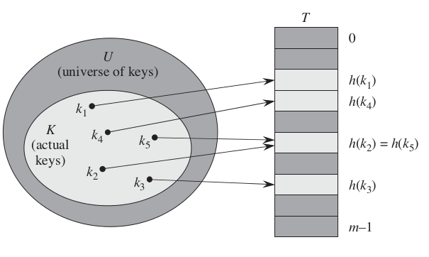
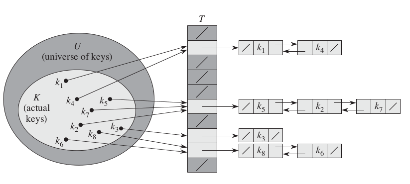

散列表之链接法
许多应用都需要一种数据结构，至少支持 INSERT、SEARCH 和 DELETE 字典操作。例如，用于程序语言编译的编译器维护了一个符号表，其中元素的关键字为任意字符串，它与程序中的标识符相对应。散列表(hash table)是实现字典操作的一种有效数据结构。尽管最坏情况下，散列表中欧给你查找一个元素的时候与链表中查找的时间相同，达到了Θ(n)。然后在实际应用中，散列查找的性能是非常好的。
直接寻址表
当关键字的全域 U 比较小时，直接寻址是一种简单而有效的技术。一般可以采用数组实现直接寻址表，数组下标对应的就是关键字的值，即具有关键字 k 的元素被放在直接寻址表的槽 k 中。直接寻址表的字典操作实现比较简单，直接操作数组即可，只需 O(1)的时间。
散列表
直接寻址技术的缺点也非常明显：如果全域 U 很大，则在一台标准的计算机可用内存容量中，要存储大小为|U|的一张表 T 也许不实际。还有，实际存储的关键字集合 K 相对 U 来说可能很小，使得分配给 T 的大部分空间都浪费掉。 所以我们需要将散列表的存储需求降至Θ(|k|)，同时散列表中查找一个元素的优势仍得到保持（O(1)时间）。所以在散列方式下，利用散列函数(hash function)h，由关键字 k 计算出槽的位置 h(k)。这里函数 h 将关键字的全域 U 映射到散列表 T[0..m-1]的槽位上。

图1 hash1
这里存在一个问题：两个关键字可能映射到同一个槽中。我们称这种情形为冲突(collision)。幸运的是，我们能找到有效的方法来解决冲突。
有两种种解决冲突的方法，一种是链接法(chaining)，另一种是开放寻址法(open addressing)。本文先介绍其中的一种——链接法。
链接法
在链接法中，把散列到同一槽中的所有元素都放在一个链表中。槽中有一个指针，它指向存储所有散列到该槽的元素的链表的表头，如果不存在这样的元素，则该槽中为 NIL。其插入操作、删除操作的最坏情况运行时间为 O(1)，而搜索操作的最坏情况运行时间为 O(n)，如果所有的元素都散列到同一槽中。

图2 hash2
在实现链接法散列表前先来看看散列函数。
散列函数
一个好的散列函数应近似的满足简单均匀假设：每一个关键字都被等可能的散列到 m 个槽位中的任何一个，并与其他关键字已散列到哪个槽位无关。另外如果关键字的全域不是自然数集，我们需要找到一种方法将它转换为自然数。散列函数可以说是散列表性能最关键的一部分。
(1)除法散列法
通过取 k 除以 m 的余数，将关键字 k 映射到 m 个槽中的某一个上：
h(k) = k mod m
当应用除法散列法时，要避免选择 m 的某些值。如 m 不应为 2 的幂，如果 m=2^{p}，则 h(k)就是 k 的 p 个最低位数字。
(2)乘法散列法
第一步：用关键字 k 乘上常熟 A(0 < A <1)，并提取 kA 的小数部分。第二步：用 m 乘以这个值，再向下取整。总之，散列函数为：h(k) = m(kA mod 1)。
乘法散列法也是某种随机的一个实现，乘法与除法散列法要好的多。
(3)全域散列法
给定一组散列函数 H，每次进行散列时候从 H 中随机的选择一个散列函数 h，使得 h 独立于要存储的关键字。全域散列函数类的平均性能是比较好的。 在网上搜索过不少散列表的实现，不知道为什么都是比较复杂，在这里给出一种比较简单的使用链表数组的实现。
链接法散列表的 C 语言实现：
#include <stdlib.h> #include <stdio.h> #define m 16 //#define HASH(k) k % m //除法散列法 #define A 0.65 #define HASH(k) (int)(m * (k * A - (int)(k * A))) //乘法散列法 struct elemt{ struct elemt *prev; struct elemt *next; int key; }; typedef struct elemt ELEM; typedef struct { ELEM *head; }LIST; void list_init(LIST *L) { L->head = (ELEM *)malloc(sizeof(ELEM)); L->head->next = L->head; L->head->prev = L->head; L->head->key = NULL; } void list_insert(LIST *L, int key) { /* * 给定一个关键字key，将key插入到链表的最前端。 */ ELEM *x; x = (ELEM *)malloc(sizeof(ELEM)); x->key = key; if (L->head->next == L->head && L->head->prev == L->head) x->next = NULL; else x->next = L->head; if (L->head->next != L->head) { L->head->prev = x; //L->head->prev表示的是L->head所指向的对象的prev属性 } L->head = x; x->prev = NULL; } void list_delete(LIST *L, ELEM *x) { /* * 给定需要删除的元素x，通过修改指针将x从链表中删除。 */ if (x->prev != NULL) { x->prev->next = x->next; } else { L->head = x->next; } if (x->next != NULL) { x->next->prev = x->prev; } free(x); } ELEM * list_search(LIST *L, int k) { /* * 给定关键字k，查找链表中第一个关键字为k的元素，并返回指向该元素的指针。 */ ELEM *x; x = L->head; while (x != NULL && x->next != x && x->key != k) { x = x->next; } if (x == NULL || x->key != k) x = NULL; return(x); } void hash_insert(LIST *table, int x) { /* * 将元素x散列后，调用链表的插入以将x到散列表中 */ list_insert(&table[HASH(x)], x); } void hash_delete(LIST *table, int x) { /* * 调用链表搜索找到元素x的，然后再调用链表删除 * 将其从散列表中删除 */ ELEM *k; k = list_search(&table[HASH(x)], x); list_delete(&table[HASH(x)], k); } void hash_search(LIST *table, int x) { /* * 为了方便测试，将散列表的搜索做了一点修改， * 直接在stdout中输出是否找到了该元素。 */ ELEM *k; k = list_search(&table[HASH(x)], x); /* if (k != NULL) return(k->key); else return(NULL); */ if (k != NULL) printf("found %d, key = %d\n", x, HASH(x)); else fprintf(stderr, "can't found %d\n", x); } void print_hash(LIST *table) { /* * 打印散列表 */ int i; ELEM *j; printf("--------------HASHTABLE--------------\n"); for (i = 0; i < m; i++) { printf("key = %2d: ", i); j = table[i].head; if (j != NULL && j->next != table[i].head) for ( ; j != NULL; j = j->next) { printf("value = %4d ", j->key); } else printf("value = NULL ", i); printf("\n"); } printf("-----------------END-----------------\n"); } int main(void) { /* * 简单的使用链表数组实现散列表 */ int i, key; LIST table[m]; for (i = 0; i < m; i++) { list_init(&table[i]); } hash_insert(table, 38); hash_insert(table, 123); hash_insert(table, 94); hash_insert(table, 29); hash_insert(table, 48); hash_insert(table, 38); hash_insert(table, 923); hash_insert(table, 31); hash_insert(table, 32); hash_insert(table, 39); hash_insert(table, 2); hash_insert(table, 24); hash_insert(table, 823); print_hash(table); hash_delete(table, 38); hash_delete(table, 48); hash_delete(table, 31); printf("\nafter delete 38, 48, 31:\n\n"); print_hash(table); printf("\nsearch 923: \n\n"); hash_search(table, 923); printf("\nsearch 239: \n\n"); hash_search(table, 239); exit(0); }